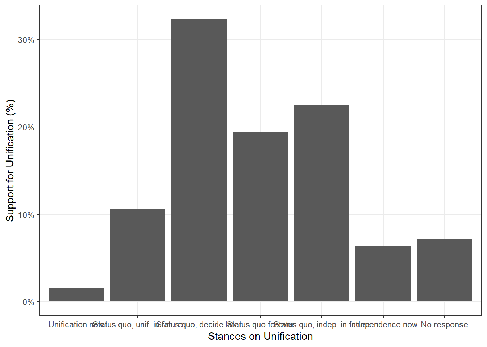

library(haven)
#We are working with the haven package.
#If not already, the package will need to be installed prior to this command.
TEDS_2016 <- read_stata(
"https://github.com/datageneration/home/blob/master/DataProgramming/data/TEDS_2016.dta?raw=true")Exploratory Data Analysis
Assignment 2 - Knowledge Mining
Using the TEDS2016 dataset, I explore different issues that arise from analysis of 1690 observations of 54 variables. Using this data, I generate graphics and computations to describe key relationships. TEDS is an acronym for Taiwan’s Election and Democratization Study, 2012-2016 (IV): the Survey of the Presidential and Legislative Elections.
Variables Explored and Missing Values:
Votesai, female, DPP, age, income, edu, Taiwanese, and Econ_worse.
When encountering missing values, I put my social sciences hat on and determine that missing values should not simply be removed. In any professional setting in pursuit of social data, the external and internal validation of the potential models can be at risk if missing values are not properly computed. The reason for the data being missing should be determined and responded to. The response should attempt to resolve the potential bias in the data by retrieving the missing value(s) and the reason for its missingness, should the budget allow. Should the project be hindered by budget or logistical constraints, it is best to move forward with replacing missing values with the vector’s average(s).
NA2mean <- function(x) replace(x, is.na(x), mean(x, na.rm = TRUE))
#Saving the function to Environment
replace(TEDS_2016, TRUE, lapply(TEDS_2016, NA2mean))Data Profile Report using DataExplorer Package
For the first half of exploratory search, I use statistical modeling methods to evaluate uni variate and bivariate relationships. The benefit of this method is to examine several pairwise and lone variables simultaneously to test several theoretical parameters. The downside of this method is that undefined metrics of unknown parameters potentially influencing the hypothesis of interest here cannot be identified and explored this way.
One of my favorite ways to generate reports on data structure for initial analysis is with the packages dplyr and DataExplorer. This method generates a number of key graphs and figures providing a basis for which relationships to investigate further.
install.packages="dplyr"
library(dplyr)
ChosenRows <- TEDS_2016 %>% select(female, DPP, age, income, edu, Taiwanese, Tondu, Econ_worse, votetsai)
#Create dataframe with irrelevant variables removed.
install.packages="DataExplorer"
library(DataExplorer)
create_report(
ChosenRows,
report_title = "Data Profiling: EDA Report")
#Generate Rmarkdown report (Click Below)Evaluating the Report
One of the most useful visualizations it provides is the Correlation Heat Map. There are 9 relationships that indicate a correlation stronger than or equal to the absolute value of .15. The strongest being between Education and Age with a negative Pearson’s correlation of -.64. We can infer that this sample shows older individuals to have less education than their younger counterparts, which makes sense in a more recently industrialized country. The strongest positive correlation is between votesai and Taiwanese at .45. My theoretical reasoning supposes that those who are more closely tied to lands and culture in Taiwan are more likely to support the nationalist party over the other dominating party (Kuomintang or KMT).
Labeling Factor Levels
Using the expss package is my easiest method of relabeling factor levels for visualization.
library(expss)Warning: package 'expss' was built under R version 4.2.2Loading required package: maditrWarning: package 'maditr' was built under R version 4.2.2
To aggregate data: take(mtcars, mean_mpg = mean(mpg), by = am)
Attaching package: 'maditr'The following objects are masked from 'package:data.table':
copy, dcast, meltThe following objects are masked from 'package:dplyr':
between, coalesce, first, last
Attaching package: 'expss'The following objects are masked from 'package:data.table':
copy, likeThe following object is masked from 'package:DataExplorer':
split_columnsThe following objects are masked from 'package:dplyr':
compute, contains, na_if, recode, varsThe following objects are masked from 'package:haven':
is.labelled, read_spssChosenRows$Tondu <- factor(ChosenRows$Tondu, levels=c('1','2','3', '4', '5','6', '9'), labels=c('Unification now','Status quo, unif. in future','Status quo, decide later', 'Status quo forever', 'Status quo, indep. in future', 'Independence now', 'No response'))Frequency Table and Bar Chart
library(ggplot2)
Attaching package: 'ggplot2'The following object is masked from 'package:expss':
varsggplot(ChosenRows, aes(Tondu)) +
geom_bar(aes(y = (..count..)/sum(..count..))) +
scale_y_continuous(labels=scales::percent) +
ylab("Support for Unification (%)") +
xlab("Stances on Unification") +
theme_bw()
library(descr)Warning: package 'descr' was built under R version 4.2.2freq(ChosenRows$Tondu)
ChosenRows$Tondu
Frequency Percent
Unification now 27 1.598
Status quo, unif. in future 180 10.651
Status quo, decide later 546 32.308
Status quo forever 328 19.408
Status quo, indep. in future 380 22.485
Independence now 108 6.391
No response 121 7.160
Total 1690 100.000